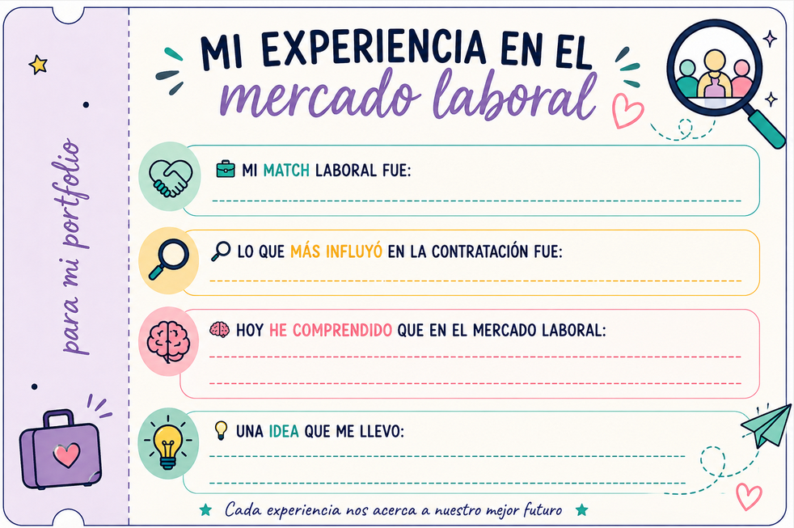

TINDER LABORAL: ENCUENTRA TU PUESTO IDEAL
|
Hoy el aula se convertirá en un mercado laboral. Algunas personas representaréis a empresas que buscan trabajadores y otras a personas que buscan empleo. Vuestra misión será encontrar el mejor match posible entre oferta y demanda de trabajo, teniendo en cuenta no solo la formación y las competencias, sino también las condiciones laborales y las preferencias de cada persona. |
 |
CONOCE TU PERFIL
| Recibirás una tarjeta que corresponde a tu papel: |
| Candidato/a (1,2): conocerás tu formación, experiencia, competencias, preferencias y expectativas salariales. Empresa (1,2): conocerás el puesto que necesitas cubrir, sus requisitos y las condiciones que ofreces. |
| Lee atentamente tu tarjeta. No la enseñes directamente al resto de la clase: tendrás que presentar tu perfil durante las conversaciones. |
Primera ronda: buscamos nuestro match
Muévete por el aula y habla con diferentes candidatos/as o empresas. En cada encuentro, intercambiad información sobre aspectos como formación, experiencia, salario, jornada y horario y cualquier otro aspecto que se te ocurra. Después de cada conversación, decide si te interesa o no encaja.
Pero recuerda: hacer match no significa conseguir el puesto. Tendréis que valorar si realmente existe un buen ajuste entre ambas partes.
Segunda ronda: negociamos
Si una empresa y un candidato consideran que pueden encajar, podrán negociar. Podéis concretar las condiciones del puesto. Al finalizar, la empresa decidirá si quiere contratar al candidato y este decidirá si acepta el puesto.
ANALIZAMOS NUESTRO MERCADO LABORAL
Una vez terminadas las entrevistas, pondremos en común los resultados.
| Candidatos/as: | Empresas: |
|---|---|
| ¿Habéis encontrado un empleo? | ¿Habéis encontrado al trabajador que buscabais? |
| ¿Qué características tenían los puestos que os interesaban? | ¿Qué requisitos eran más difíciles de encontrar? |
| ¿Qué competencias han sido más demandadas? | ¿Habéis tenido que modificar vuestras condiciones? |
| ¿Habéis tenido que renunciar a alguna de vuestras preferencias? | ¿Había muchos candidatos para vuestro puesto o pocos? |
REFLEXIONAMOS:
- ¿Qué ocurre cuando muchas personas buscan trabajo pero existen pocos puestos disponibles?
- ¿Qué ocurre cuando las empresas necesitan trabajadores pero no encuentran candidatos con las características que buscan?
- ¿Qué factores influyen en el salario y en las posibilidades de encontrar empleo?
- ¿Por qué no todos los candidatos tienen las mismas oportunidades en el mercado laboral?
